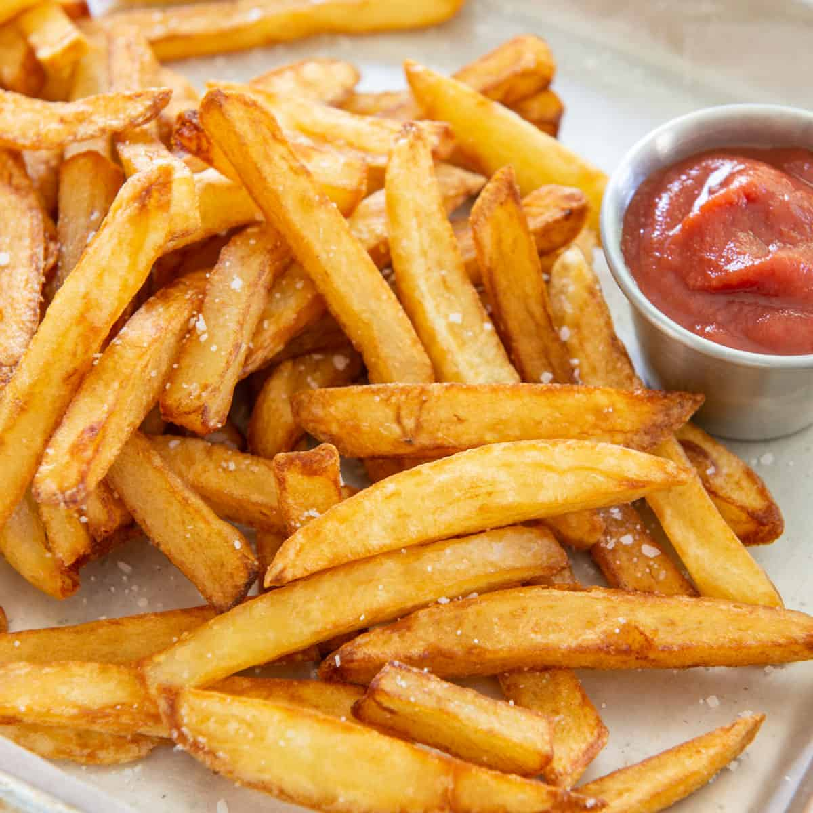

Fries

Description
This is a delicious, crispy side that is perfect after a long day of work!
Ingredients
Steps
- 1. Slice the potatoes and place them in cold water to prevent browning.
- 2. Sift the flour and seasonings, then gradually stir in water to make a batter.
- 3. Drain and dry the sliced potatoes, then dip in the batter.
- 4. Fry the potatoes until golden brown and crispy.
- Enjoy!